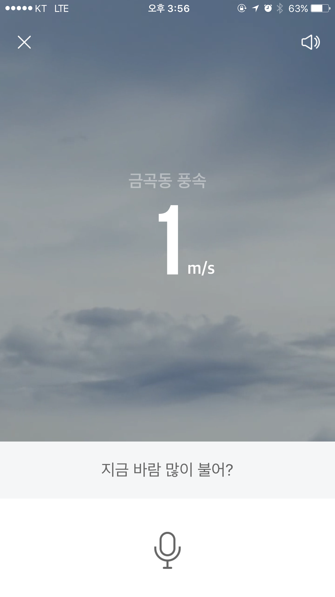

WindSpeed Template
풍속 정보를 제공하는 템플릿입니다. 화면에 풍속 정보를 표시할 때 사용됩니다.
Note!
풍속 정보를 표시한 예는 Screen UI example을 참조합니다.
Template field
| 필드 이름 | 자료형 | 필드 설명 | 필수 여부 |
|---|---|---|---|
bgClipUrl |
URLObject | 배경음 파일의 URL 정보가 담긴 객체 | 필수 |
linkUrl |
URLObject | 콘텐츠 링크 경로가 담긴 객체 | 선택 |
location |
StringObject | 지역 정보가 담긴 객체 | 필수 |
type |
string | Content template 구분자. "WindSpeed"로 고정 | 필수 |
windSpeed |
NumberObject | 풍속 정보가 담긴 객체 | 선택 |
Template Example
{
"bgImageUrl": {
"type": "url",
"value": "https://ssl.pstatic.net/static/clova/service/weather/bg_cloud_night.mp4"
},
"location": {
"type": "string",
"value": "정자1동"
},
"type": "WindSpeed",
"windSpeed": {
"type": "number",
"value": "1m/s"
}
}
Screen UI example
다음은 NAVER가 배포한 모바일용 Clova 앱에서 WindSpeed 템플릿의 내용을 표현한 UI 예제입니다.
